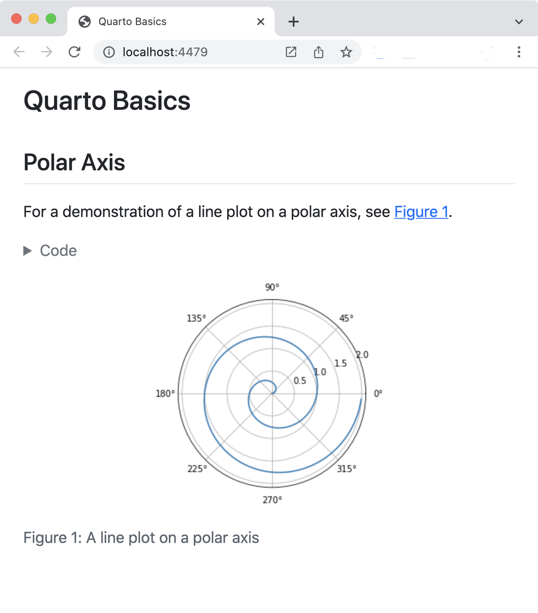

Tutorial: Hello, Quarto
Overview
In this tutorial we’ll show you how to use the VS Code notebook editor with Quarto. You’ll edit code and markdown cells in VS Code just as you would with any notebook and preview the rendered document in a web browser as you work.
Here’s how this will look:

The notebook on the left is rendered into the HTML version you see on the right. This is the basic model for Quarto publishing—take a source document (in this case a notebook) and render it to a variety of output formats, including HTML, PDF, MS Word, etc.
Rendering
We’ll start out by opening a notebook (hello.ipynb) in VS Code and rendering it to a couple of formats. If you want to follow along step-by-step in your own environment, download the notebook below.
Then, create a new directory to work within and copy the notebook into this directory.
Once you’ve done that, switch to this directory in a terminal, install notebook dependencies (if necessary), and open VS Code to get started working with the notebook. The commands you can use for installation of dependencies are given in the table below.
| Platform | Commands |
|---|---|
| Mac/Linux | |
| Windows | |

Next, open a new Terminal (either externally or within VS Code) to use for Quarto commands. Now, render the notebook to a couple of formats:
quarto render hello.ipynb --to html
quarto render hello.ipynb --to docxAuthoring
The quarto render command is used to create the final version of your document for distribution. However, during authoring you’ll use the quarto preview command. Try it now from the Terminal with hello.ipynb:
quarto preview hello.ipynbThis will render your document and then display it in a web browser:

You might want to position VS code and the browser preview side-by-side so you can see changes as you work:
To see the live preview in action, change the the line of code that defines theta as follows:
theta = 4 * np.pi * rRe-run the code cell to generate a new version of the plot. Then, save the notebook. You’ll see that the Quarto preview updates as well. This is the basic workflow for authoring with Quarto.
There are few different types of cells in our notebook, let’s work a bit with each type.
YAML Options
You are likely already familiar with markdown and code cells, but there is a new type of cell (“Raw”) that is used for document-level YAML options:

Try changing the code-fold option to false:
format:
html:
code-fold: falseThen save the notebook. You’ll notice that the code is now shown above the plot, where previously it was hidden with a “Code” button that could be used to show it.
Markdown Cells
Markdown cells contain raw markdown that will be passed through to Quarto during rendering. You can use any valid Quarto markdown syntax in these cells. Here we specify a header and a cross-reference to the figure created in the code cell below:

Try changing the header and saving the notebook—the preview will update with the new header text.
Code Cells
You are likely already familiar with code cells, like the one shown below:

But there are some new components at the top of the code cell: label and fig-capoptions. Cell options are written in YAML using a specially prefixed comment (#|).
In this example, the cell options are used to make the figure cross-reference-able. Try changing the fig-cap and/or the code, running the cell, and then saving the notebook to see the updated preview.
There are a wide variety of cell options that you can apply to tailor your output. We’ll delve into these options in the next tutorial.
Next Up
You now know the basics of creating and authoring Quarto documents. The following tutorials explore Quarto in more depth:
Tutorial: Computations — Learn how to tailor the behavior and output of executable code blocks.
Tutorial: Authoring — Learn more about output formats and technical writing features like citations, crossrefs, and advanced layout.